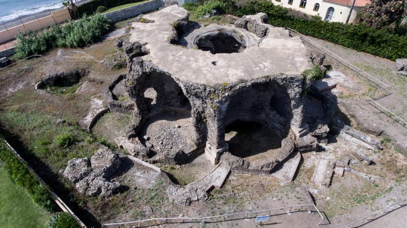
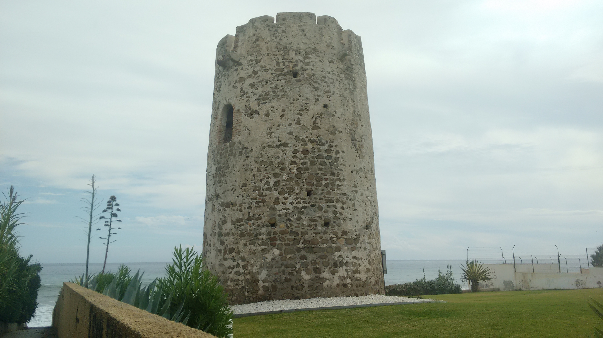

Patrimonio de San Pedro Alcántara
Termas romanas de Las Bóvedas
Torre almenara de Bóvedas
Basílica de Vega del Mar
Las termas romanas de Las Bóvedas están situadas entre la desembocadura del arroyo del Chopo y la del río Guadalmina, a 500 metros de la Basílica de Vega del Mar, en San Pedro de Alcántara. Se trata de un edificio termal romano datado entre los siglos ii y iii d. C. El edificio es de planta octogonal, con ocho habitaciones dispuestas en torno a una sala central. Se supone que estas salas se usaban como piscinas de agua caliente, templada y fría, cuya temperatura dependía de su cercanía del horno que calentaba todas las estancias gracias al sistema de calefacción subterránea.
La torre de Las Bóvedas Se encuentra situada en la desembocadura del río Gualdalmina y data del siglo xvi. Su nombre procede de su ubicación junto a las termas romanas del mismo nombre, de las que la separa unos 50 metros. Es una de las torres vigía que existían a lo largo de nuestra costa y que formaban parte del sistema defensivo de la misma, construida para utilizar armas de fuego en la playa.
Los restos arqueológicos de la basílica paleocristiana de Vega de Mar se ubican junto a la desembocadura del río Guadalmina y a 500 metros de las Termas Romanas de las Bóvedas, en San Pedro de Alcántara. Se supone que por esta zona discurría la vía Hercúlea del itinerario Antonino, que unía Cádiz con Cartagena, además de poder haber formado parte de la ciudad de Cilniana, la cual se supone que se encontraba en esta zona, aunque no existen pruebas fehacientes de esto. Se trata de un conjunto arqueológico formado por los restos de una basílica paleocristiana y una necrópolis compuesta por más de doscientos enterramientos. Estos restos fueron descubiertos en 1915, cuando se decide repoblar la zona con eucaliptos. Desde entonces ha sido objeto de numerosas excavaciones y estudios.